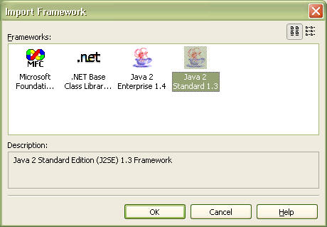

A model framework enables use of application frameworks or class libraries in StarUML™. For instance, JFC (Java Foundation Classes), MFC (Microsoft Foundation Classes), and VCL (Visual Component Library) can be the objects for a model framework. As will be described later in this chapter, the user can define his or her own model framework as well. The biggest advantage of using model frameworks is that it facilitates shared use and reuse of the common and basic modeling elements and structures.
The "Import Model Framework" dialog (illustration below), accessible through the [File]-[Import]-[Framework¡¦] menu in the StarUML™ application, displays a list of the model frameworks installed in the system. Selecting an item from the list and running it results in automatic inclusion of the modeling structure defined by the model framework in the path specified. A model framework consists of many unit files, and the model frameworks included in StarUML™ are treated in the same way as the units.

The list of the model frameworks installed in the system can be obtained, or specific model frameworks can be included in projects, by using StarUML™'s external API as illustrated above. Details on this will be discussed later.
A model framework consists of many unit files (.unt) and one model framework definition document file (.frw), and it may have an optional icon file (.ico). Follow the steps below to define a new model framework.
Model framework document files are created according to XML document conventions, and the extension name is.frw (Framework File). Information for a model framework is contained within the FRAMEWORK tag, and there must not be any errors in syntax or contents.
<?xml version="1.0" encoding="..." ?>
<FRAMEWORK version="...">
<HEADER>
...
</HEADER>
<BODY>
...
</BODY>
</FRAMEWORK>
The HEADER section contains general information for the model framework such as the model framework name and description.
<HEADER>
<NAME>...</NAME>
<DISPLAYNAME>...</DISPLAYNAME>
<DESCRIPTION>...</DESCRIPTION>
</HEADER>
The BODY section contains actual information for the model framework and largely consists of the IMPORTPROFILES section and the FRAMEWORKMODELS section.
<BODY>
<IMPORTPROFILES>
<PROFILE>...</PROFILE>
...
</IMPORTPROFILES>
<FRAMEWORKMODELS>
<UNIT>...</UNIT>
...
</FRAMEWORKMODELS>
</BODY>
Note: The "UNIT element" specifies only those unit files that belong to the top-level units. As discussed in "Chapter 4. Using Open API", when a unit contains lower-level units, all the lower-level units are loaded together when the upper-level unit is loaded.
The following is an example of a model framework document that defines the Java 2 Standard Edition (J2SE) 1.3 model framework.
<?xml version="1.0" encoding="UTF-8" ?>
<FRAMEWORK version="1.0">
<HEADER>
<NAME>J2SE1.3</NAME>
<DISPLAYNAME>Java 2 Standard 1.3</DISPLAYNAME>
<DESCRIPTION>Java 2 Standard Edition (J2SE) 1.3 Framework.</DESCRIPTION>
</HEADER>
<BODY>
<FRAMEWORKMODELS>
<UNIT>J2SE13 (java).pux</UNIT>
<UNIT>J2SE13 (javax).pux</UNIT>
<UNIT>J2SE13 (org).pux</UNIT>
</FRAMEWORKMODELS>
</BODY>
</FRAMEWORK>
To make a framework to be recognized automatically by StarUML, must place it in the subdirectory of StarUML module directory(<install-dir>\modules). StarUML searches and reads all frameworks in the module directory and registers them at the program automatically when StarUML is initializing. If framework file is invalid or it's extension file name is not .frw, StarUML will not read the framework and ignore it. It is recommended that make a subdirectory in the StarUML module directory and place the framework in there to avoid modules being out of order.
Note: To register framewordk icon, Make icon file for the framework and place it in the directory of the framework. Icon of the framework is displayed with the name at frameworks list in the [Import Framework] dialog. If there is no icon file which name is same of the framework's, default icon is registered as icon of the framework.
Note: Delete files of the framework from the StarUML module directory(<install-dir>\modules) not to use the framework any more.
The list of the model frameworks installed in the system can be viewed through external API. The external APIs for this are the GetAvailableFrameworkCount method and the GetAvailableFrameworkAt method of the IProjectManager interface. The following are the expressions of these two methods.
IProjectManager.GetAvailableFrameworkAt(Index: Integer): String IProjectManager.GetAvailableFrameworkCount(): Integer
The IProjectManager.ImportFramework method can be used to include a registered model framework in the current project. The method expression is as follows. The OwnerPackage argument specifies the upper-level model element where the model framework will be included. This must be an IUMLPackage type model element. And the FrameworkName argument is the name of the model framework to load. This is a string value for the accurate name (ID) of the model framework.
IProjectManager.ImportFramework(OwnerPackage: IUMLPackage; FrameworkName: String)
The following example shows importing the "J2SE1.3" model framework using the IProjectManager.ImportFramework method.
var app = new ActiveXObject("StarUML.StarUMLApplication");
var prjMgr = app.ProjectManager;
var owner = ... // Get reference to IUMLPackage type element.
prjMgr.ImportFramework(owner, "J2SE1.3");